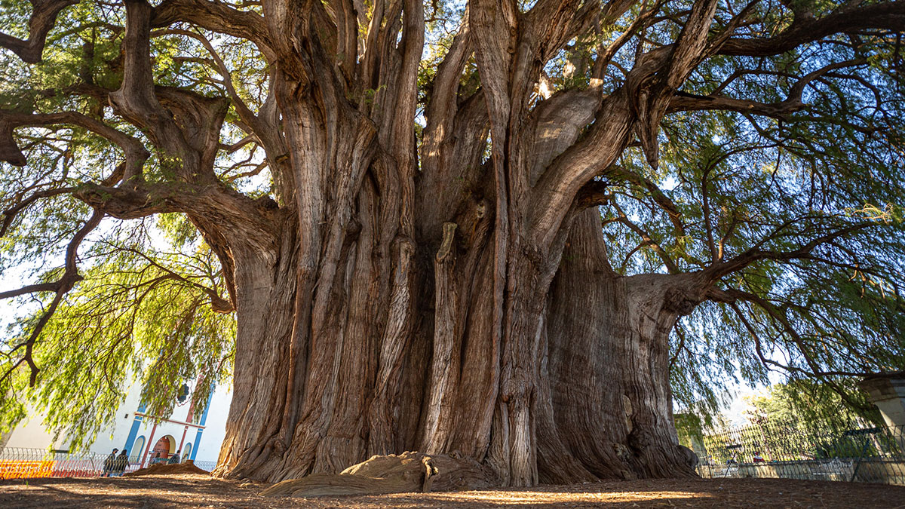

El Árbol del Tule no es solo un atractivo turístico de gran relevancia en México, sino también un símbolo de resistencia natural que ha sido testigo de la historia de Oaxaca durante más de dos milenios. A continuación, te presentamos los datos técnicos más destacados que registran los científicos e historiadores sobre este majestuoso ejemplar:

Datos importantes del Arbol Tule:
| Característica | Dato Real |
|---|---|
| Ubicación | Santa María del Tule, Oaxaca, México |
| Especie | Ahuehuete o sabino (Taxodium mucronatum) |
| Circunferencia del tronco | Aproximadamente 42 a 45 metros |
| Diámetro | Cerca de 14 metros |
| Altura | Alrededor de 35.4 a 42 metros |
| Peso Estimado | Más de 600 toneladas |
| Edad Estimada | Entre 2,000 y 3,000 años |
¿Qué debes saber si planeas visitarlo?:
- Ubicación accesible: Se encuentra a tan solo 12 kilómetros de la ciudad de Oaxaca de Juárez.
- Horarios: Está abierto al público generalmente todos los días en horario diurno, y cuenta con guías locales certificados.
- Respeto ambiental: Debido a su antigüedad, el acceso directo al tronco está limitado por una barda protectora para evitar el desgaste por el contacto humano.